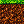

ANTHIVE – erster Kachelprototyp
Jede Vorschau zeigt eine 24 × 24-Pixel-Kachel vergrößert auf 192 × 192 Pixel.
Oberboden
Kompakte Erde
Lehm
Steinschicht
Tiefengestein

Gras-auf-Erdegerader Übergang
Unregelmäßige Erdoberkante
Ufer- und Teichrandübergang